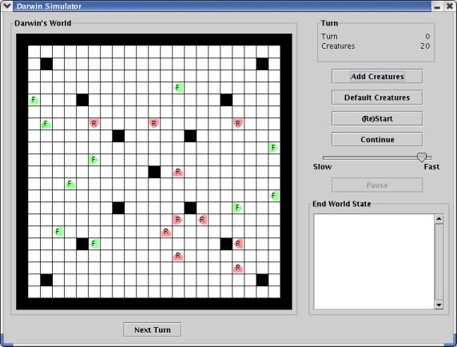

Introduction:
Darwin's World is a game that was invented and first described by Nick Parlante at Stanford University, and later extended by Eric Roberts and others. The following descriptions are adapted from their work.
The game simulates a two-dimensional world divided up into small squares and populated by a number of creatures. Each of the creatures lives in one of the squares, faces in one of four directions (up, down, left or right) and belongs to a particular species, which determines what color the creature is and how that creature behaves. For example, one possible configuration of the world is shown in Figure 1.

Figure 1: Darwin's World.
This sample world is populated with 20 creatures, ten of a species
called Rover and 10 of a species called Flytrap. In each case, the creature
is identified in the graphics world with its color and the first letter in
its species name. The orientation is indicated by the figure
surrounding the identifying letter; the creature points in the direction
of the arrow. The behavior of each creature - which you can think of as a
small robot - is controlled by a program that is particular to each species.
Thus, all of the Rovers behave in the same way,
as do all of the Flytraps, but the behavior of each species is different
from the other.
As the simulation proceeds, every creature gets a turn.
On its turn, a creature executes a
short piece of its program in which it may look in front of itself
to see what's there and then take some action. The possible actions are
moving forward, turning left or right, or infecting
some other creature standing immediately in front, which transforms that
creature into a member of the infecting species. As soon as one of these
actions is completed, the turn for that creature ends, and some other
creature gets its turn. When every creature has had a turn,
the process begins all over again with each creature taking a second turn,
and so on. The goal of the game is to infect as many creatures as possible
to increase the population of your own species.
Species Programming:
In order to know what to do on any particular turn, a creature executes some number of instructions in an internal program specific to its species. For example, the program for the Flytrap species is shown in Table 1. The step numbers and comments are not part of the actual program, but are included here to make it easier to understand the program. The Flytrap program as it would appear in an actual file is shown in Figure 2.
On its turn, a Flytrap first checks to see if it is facing an enemy creature in the adjacent square. If so, the program jumps ahead to step 3 and infects the hapless creature that happened to be there. If not, the program instead goes on to step 1, in which it simply turns left. In either case, the next instruction is a go instruction that will cause the program to start over again at the beginning of the program.
| step number | instruction | comment |
|---|---|---|
| 0 | ifenemy 3 | If there is an enemy ahead, go to step 3 |
| 1 | left | turn left |
| 2 | go 0 | go back to step 0 |
| 3 | infect | infect the adjacent creature |
| 4 | go 0 | go back to step 0 |
Programs are executed beginning with the instruction in step 0 and ordinarily continue with each new instruction in sequence, although this order can be changed by certain instructions in the program. Each creature is responsible for remembering the number of the next step to be executed. The instructions that can be part of a Darwin program are listed in Table 2.
| instruction | meaning |
|---|---|
| hop | The creature moves forward if the square it is facing is empty. If moving forward would cause the creature to land on top of another creature or a wall, the hop instruction does nothing. |
| left | The creature turns left 90 degrees to face in a new direction. |
| right | The creature turns right 90 degrees. |
| infect | If the square immediately in front of this creature is occupied by a creature of a different species (an "enemy") that creature is infected to become the same as the infecting species. When a creature is infected, it keeps its position and orientation, but changes its internal species indicator and begins executing the same program as the infecting creature, starting at step 0. |
| ifempty n | If the square in front of the creature is unoccupied (by a wall or another creature), update the next instruction field in the creature so that the program continues from step n. If that square is occupied, go on with the next instruction in sequence. |
| ifwall n | If the creature is facing a wall, jump to step n; otherwise, go on with the next instruction in sequence. |
| ifsame n | If the square the creature is facing is occupied by a creature of the same species, jump to step n; otherwise, go on with the next instruction. |
| ifenemy n | If the square the creature is facing is occupied by a creature of an enemy species, jump to step n; otherwise, go on with the next instruction. |
| ifrandom n | In order to make it possible to write some creatures capable of exercising what might be called the rudiments of "free will", this instruction jumps to step n half the time and continues with the next instruction the other half of the time. |
| go n | This instruction always jumps to step n, independent of any condition. |
A creature can execute any number of if or go instructions without relinquishing its turn. The turn ends only when the program executes one of the instructions hop, left, right, or infect. On subsequent turns, the program starts up from the point in the program at which it ended its previous turn.
The program for each species is stored in a file in the Darwin project directory. Each species file consists of the species name, followed by the species color (on the next line), followed by the species program. Darwin's World creatures can be of the following colors: blue, cyan, gray, green, magenta, orange, pink, red, or yellow. The instructions in the program appear in order and one per line. The program ends with a blank line. Comments may appear after the blank line or at the end of each instruction line. For example, the file for the Flytrap creature appears in Figure 2.
Flytrap green ifenemy 3 left go 0 infect go 0 The flytrap sits in one place and spins. It infects anything which comes in front. Flytraps do well when they clump.
Flytrap.txt containing the species
name, color and program for Flytraps.There are several presupplied creature files (in the Darwin project directory) - see Table 3. You can also create your own creatures by creating a text file in this format. On Windows machines, use NotePad or WordPad for this. On Apple machines, use TextEdit (available via the Finder under Applications).
Food.txt |
This creature spins in a square but never infects anything. Its only purpose is to serve as food for other creatures. As Nick Parlante explains, "the life of the Food creature is so boring that its only hope in life is to be infected by something else so that it gets reincarnated as something more interesting." |
Hop.txt |
This creature just keeps hopping forward until it reaches a wall. Not very interesting, but it is useful to see if your program is working. |
Flytrap.txt |
This creature spins in one square, infecting any enemy creature it sees. |
Rover.txt |
This creature walks in straight lines until it is blocked, infecting any enemy creature it sees. If it can't move forward, it turns. |
The User Interface:
The buttons in the user interface (see Figure 1) have the following functionality:
| Add Creatures | add creatures to the world. After clicking this button, you will be prompted for a file name (containing the species program) and the number of the species to add. The file containing the species program must be located in the Darwin project directory. |
| Default Creatures | add 10 each of the presupplied creatures to the world. Note that for both Add Creatures and Default Creatures, any creature that is added on top of a wall or another creature dies instantly. |
| (Re)Start | begin a new simulation. This button can be clicked before the current simulation has ended if nothing interesting is happening. |
| Next Turn | allow each creature to have one turn. The simulation ends after 200 turns for each creature. |
| Continue | run the simulation to the end (so that the user does not have to click Next Turn 200 times). |
| Pause | used after Continue has been clicked to allow the world to be inspected in detail. |
The slider can be used to control the speed of the simulation (when
Continue has been clicked). The user interface displays the current
turn, the total number of creatures, and, after the simulation is
complete, the number of each kind of creature remaining.
The Assignment:
Your task is to complete the implementation of Darwin's World creatures,
and to design a creature of your own.
Create a Lab08 folder in your COMP131 folder.
Download and unpack the Darwin project
into your Lab08 folder.
After opening the Darwin project in BlueJ, you can start the
program by creating an instance of the DarwinGUI class.
Of course, the program will not work correctly (yet).
Do the following to complete this lab:
Program class, and create a test class and
write test cases that achieve statement coverage for the
Program class. You will need to
choose one or more fields for this class, and implement all methods
and the constructor. You will find it helpful to look at the interface
view of the Instruction class, as a Program
is a list of Instructions. Your test case for the
print method should simply call the method in order to
achieve statement coverage. Your instructor will check the correctness of
your print method manually.
Creature class, and create a test class and
write test cases that achieve statement coverage.
You will need to choose the fields for this class, and implement all methods
and the constructor.
Your test case for the
print method should simply call the method in order to
achieve statement coverage. Your instructor will check the correctness of
your print method manually.
MyCreature.txt in the Darwin folder. A stub version
of this file has been provided for you. Edit it with a text editor
such as NotePad, WordPad, or TextEdit to add the information about your creature.
Submitting Your Solution:
Submit your Darwin project via Web-CAT. You must include test
cases that achieve statement coverage for the Program and
Creature classes. You must also include a creature of your own
design in a file called MyCreature.txt in the Darwin folder.